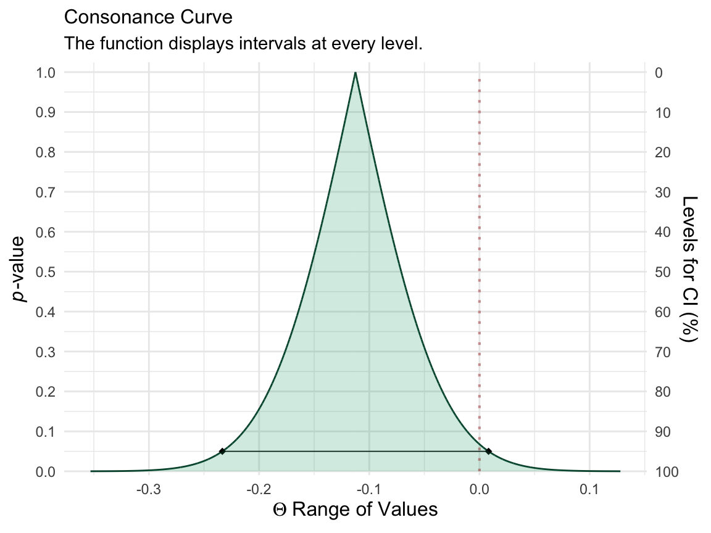
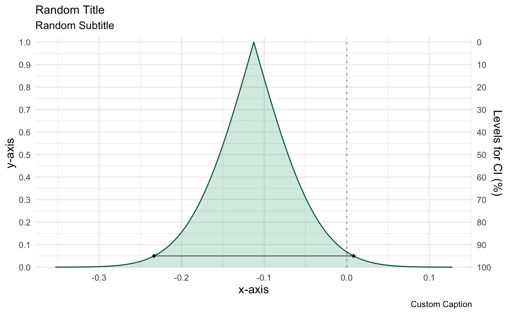
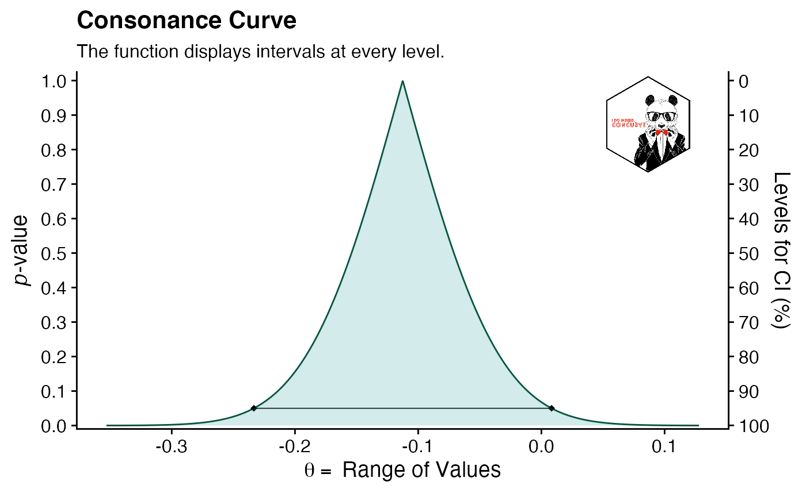
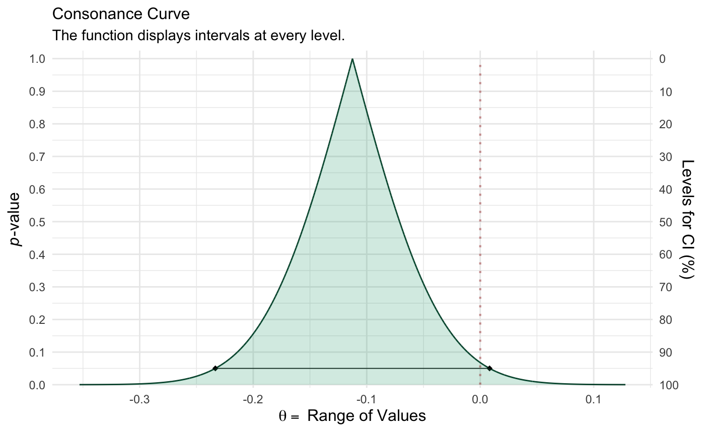

A Universal Grammar of Graphics
Because concurve graphs functions via ggplot2, it is quite easy to customize parts of the plot beyond some of the arguments that are provided in the ggcurve() function. For example, we are able to provide arguments to the function to give custom titles, subtitles, x-axes, y-axes, fills, and colors. However, we could also do this using the standard ggplot2 grammar. We’ll generate a quick graph to show how.
library(concurve) set.seed(1031) GroupA <- rnorm(500) GroupB <- rnorm(500) RandomData <- data.frame(GroupA, GroupB) intervalsdf <- curve_mean(GroupA, GroupB, data = RandomData, method = "default" ) (function1 <- ggcurve(data = intervalsdf[[1]], type = "c", nullvalue = TRUE))

Those are some of the default options provided to ggcurve(). We could provide ggcurve() arguments for the title, subtitle, etc, but we could also do it like so:
library(ggplot2) function1 + labs( title = "Random Title", subtitle = "Random Subtitle", x = "x-axis", y = "y-axis", caption = "Custom Caption" )

If we even wanted to provide a custom theme, we could do the following.
library(cowplot) #> #> ******************************************************** #> Note: As of version 1.0.0, cowplot does not change the #> default ggplot2 theme anymore. To recover the previous #> behavior, execute: #> theme_set(theme_cowplot()) #> ******************************************************** logo_file <- "https://res.cloudinary.com/less-likely/image/upload/v1575441662/Site/Logo2.jpg" function1 <- function1 + theme_cowplot() function2 <- ggdraw(function1) + draw_image(logo_file, x = 1, y = 1, hjust = 2, vjust = 1.75, width = 0.13, height = 0.2) function2

I’ve only tried testing this with the cowplot package, so I cannot say for sure that the functions won’t break when applied with other themes.1
More Advanced Customization
Although the above shows how flexible concurve’s ggcurve() is due to the integration with the ggplot2 framework, we can achieve much more with a newer package called ggtext.2 If we wanted to fully control how the labels and titles in our graphs looked or insert textboxes with full control, we could easily do that with ggtext.
Before we used cowplot, here’s what our plain function looked like (after regenerating it from scratch)
(function1 <- ggcurve(data = intervalsdf[[1]], type = "c", nullvalue = TRUE))

Simple enough, eh?
Okay, but if we wanted to have more fine control over how the title and axes look, we could do that. Here’s how:
We take our existing object function and we specify all the usual options for the titles, axes, etc
(function1 <- ggcurve(data = intervalsdf[[1]], type = "c", nullvalue = TRUE, title = "Something Super Important", xaxis = "Theta"))

But now, instead of doing that above, we’ll use a different style to control the size, form, and color of the text. We’ll load ggtext and then specify the arguments.
library(ggtext) function1 <- ggcurve(data = intervalsdf[[1]], type = "c", nullvalue = TRUE, title = "Something Super Important", xaxis = "<span style = 'color:#3f8f9b;'>Theta</span> ") function1 + labs( title = "*P*-value Function / Consonance Curve<br><span style = 'font-size:9pt;'> The function below contains <span style = 'color:#3f8f9b;'>nested</span> confidence/compatibility intervals at <span style = 'color:#3f8f9b;'>every possible level</span> (95%, 90%, 75%, 50%) allowing one to see a range of estimates that are <span style = 'color:#3f8f9b;'>consistent with the model and its assumptions</span> that were used to compute the test statistics, *P*-values, and interval estimates. </span>", subtitle = NULL ) + theme( plot.title = element_textbox_simple( size = 11, lineheight = 1.1, linetype = 1, # turn on border box.color = "#748696", # border color fill = "white", # background fill color r = grid::unit(3, "pt"), padding = margin(8, 8, 8, 8), # padding around text inside the box maxwidth = unit(8, "in"), # margin outside the box ), axis.text = element_text(size = 10), axis.title.y = element_text(size = 11), axis.title.x = element_textbox_simple( size = 10, width = NULL, padding = margin(4, 4, 4, 4), margin = margin(4, 0, 0, 0), linetype = 1, r = grid::unit(3, "pt"), box.color = "#748696", # border color fill = "white", # background fill color ) )

As you might have noticed above, we can control the size of the text, the color of it, whether it’s bolded, italicized, etc., and that’s partially because it uses markdown.
Saving Plots
The most common way useRs save plots is by going to the plots tab in an IDE like RStudio and clicking “export” and then “save as image” or by using ggsave(), however, cowplot has a superior function with far better default options built into it known as save_plot().
save_plot("function2.pdf", function2)
Previously, it was quite difficult to save consonance functions as .svg files or as .pdf files because there was so much information in the graphs that R would often crash. However, this is no longer the case and can easily be done with the svglite package. Once again, we use the same command from above.
library(svglite) library(ggplot2) res <- 144 svglite("pvalfunc.svg", width = 720/res, height = 500/res) (function1 <- ggcurve(data = intervalsdf[[1]], type = "c", nullvalue = TRUE)) dev.off() #> quartz_off_screen #> 2
References
1. Wilke CO. Cowplot: Streamlined Plot Theme and Plot Annotations for “Ggplot2”.; 2019. https://CRAN.R-project.org/package=cowplot.
2. Wilke CO. Ggtext: Improved Text Rendering Support for ’Ggplot2’.; 2020. https://CRAN.R-project.org/package=ggtext.